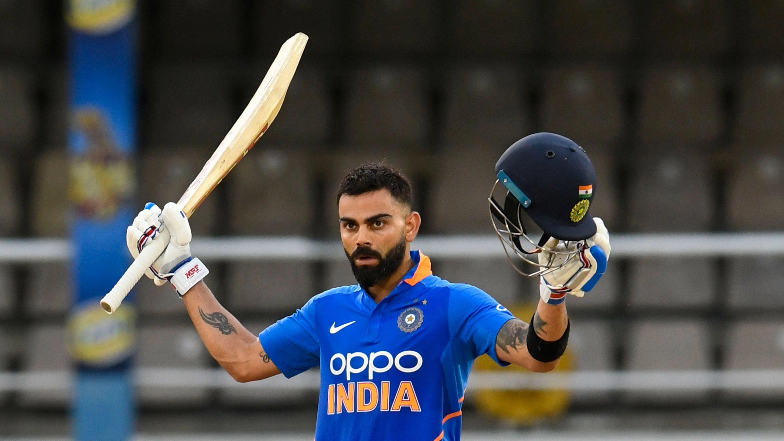
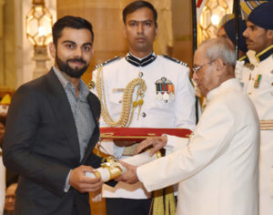

Virat Kohli

Birth Place
Earlier Career
international Career
Career Summary
Centuries And Records
Awards
Gallery
Birth Place
born 5 November 1988) is an Indian international cricketer and the former captain of the Indian national cricket team. He currently represents Royal Challengers Bangalore in the IPL and Delhi in domestic cricket. Kohli is widely regarded as one of the greatest batsmen in the history of cricket, and the best of 21st century.[3] He is the highest run scorer in T20I and IPL. In 2020, the International Cricket Council named him the male cricketer of the decade. Kohli is currently fourth-highest run-scorer in international cricket and stands second in the list of most international centuries scored. He also holds the record for scoring the most centuries in One Day International cricket.[4][5] Kohli was a member of the Indian team that won the 2011 Cricket World Cup and 2013 ICC Champions Trophy.
In 2013, Kohli was ranked number one in the ICC rankings for ODI batsmen. In 2018, he was ranked top Test batsman, making him the only Indian cricketer to hold the number one spot in all three formats of the game. He is the first player to score 20,000 runs in a decade.
He has received many accolades for his performances in cricket. He was recognized as the ICC ODI Player of the Year in 2012 and has won the Sir Garfield Sobers Trophy, given to the ICC Cricketer of the Year, on two occasions, in 2017 and 2018 respectively. Subsequently, Kohli also won ICC Test Player of the Year and ICC ODI Player of the Year awards in 2018, becoming the first player to win both awards in the same year. Also, he was named the Wisden Leading Cricketer in the World for three consecutive years, from 2016 to 2018. At the national level, Kohli was honoured with the Arjuna Award in 2013, the Padma Shri under the sports category in 2017 and the Khel Ratna award, India's highest sporting honour, in 2018.
In 2018, Time magazine included him on its list of the 100 most influential people in the world. Kohli has been deemed one of the most commercially viable athletes, with estimated earnings of ₹634 crore (US$79 million) in the year 2022.
Earlier Career
Virat Kohli was born on 5 November 1988 in Delhi into a Punjabi Hindu family. His father, Prem Kohli, worked as a criminal lawyer and his mother, Saroj Kohli, served as a housewife. He has an older brother, Vikas, and an older sister, Bhawna.[6] Kohli's formative years were spent in Uttam Nagar. He commenced his early education at Vishal Bharti Public School.[7] According to his family, Kohli exhibited an early affinity for cricket as a mere three-year-old. He would pick up a cricket bat, display natural skill, and request his father to bowl to him.[8]
In 1998, the West Delhi Cricket Academy (WCDA) was created. On 30 May of that year, Prem Kohli, who'd espoused his younger son's fervour for cricket, assisted nine-year-old Kohli's aspirations and arranged for him to meet Rajkumar Sharma, who initially perceived him to be just another enthusiastic and determined young boy. However, two weeks later, Sharma was impressed by Kohli's accuracy and power in throwing.[9] Upon the suggestion of their neighbours, Kohli's father considered enrolling his son in a professional cricket academy, as they believed that his cricketing abilities merited more than just playing in gully cricket.[10] Despite his abilities, he faced the setback of being unable to secure a place in the under-14 Delhi team, not due to a lack of merit but due to extraneous factors. Prem Kohli received offers to relocate his son to influential clubs, which would have ensured his selection, but he declined the proposals, as he was determined that Kohli should earn his recognition based on his own merit and overcome the system of nepotism and deceit prevalent in the Delhi and District Cricket Association (DDCA). Kohli persisted and eventually found his way into the under-15 Delhi team.[11] He received training at the academy while simultaneously participating in matches at the Sumeet Dogra Academy located at Vasundhara Enclave.[12] As per Sharma's recollection of Kohli's initial days at his academy, he exuded remarkable talent, making it arduous for the coach to curb his enthusiasm. Kohli remained prepared to bat at any position, and often, Sharma had to physically coerce him to leave the training sessions, as he was reluctant to depart.[13] In pursuit of furthering his cricketing career, he transitioned to Saviour Convent School during his ninth-grade education.[10] Kohli's ardent passion for cricket compelled him to travel long distances with his father to ensure that he never missed a match. With time, he diligently honed his skills and diversified his range of shots, commanding respect from the local bowlers.[14]
On 18 December 2006, Kohli experienced the loss of his father due to a cerebral attack.[10][15] During his childhood, his father played a crucial role in supporting his cricket training. Kohli has credited his father as the one who drove him to practice every day. He has expressed his feelings of missing his father's presence at times.[7][16] Following the demise of Kohli's father, his mother observed a significant change in his personality. Kohli appeared to become more mature overnight, and he began taking every cricket match seriously. He harboured an aversion to exclusion from games and appeared to channel his entire existence into the pursuit of cricket following his father's untimely demise.[10] Kohli's family resided in Meera Bagh, Paschim Vihar until the year 2015, after which they relocated to Gurgaon.[17]
International Career

2008–2009: Debut and maiden stint
In August 2008, Kohli was selected for inclusion in the ODl squad for the tour of Sri Lanka and the Champions Trophy in Pakistan. Prior to the Sri Lankan tour, Kohli had limited experience, with only eight List A matches under his belt.[46] So, his selection was considered a "surprise call-up".[47] During the Sri Lankan tour, as both first-choice openers Sachin Tendulkar and Virender Sehwag, were unable to play due to injury, Kohli was required to fill the role of makeshift opener throughout the series.[48] On 18 August 2008, Kohli made his international debut at the age of 19 in the first ODI of the tour, where he was dismissed for 12 runs, caught dead in front by an incutter from Nuwan Kulasekara.[49] However, in the fourth match of the series, Kohli achieved his inaugural half century in the ODl format, with a total of fifty-four runs scored.[50]
Following the postponement of the Champions Trophy to 2009, Kohli was picked as a replacement for the injured Shikhar Dhawan in the India A squad for the unofficial Tests against Australia A in September 2008.[51] Despite limited opportunities, he managed to make an impact in the single innings that he participated in, scoring 49 runs.[52] In October 2008, Kohli participated in a four-day tour match against Australia as part of the Indian Board President's XI team. The match featured a formidable Australian bowling line-up that consisted of Brett Lee, Stuart Clark, Mitchell Johnson, Peter Siddle and Jason Krejza. Despite this, Kohli displayed his batting prowess by scoring 105 runs in the first innings and an unbeaten 16 runs in the second innings, demonstrating his ability to perform against high-level international competition.[53]
In November 2008, Kohli was selected for inclusion in the squad for the home ODI series against England, due to the presence of established and experienced players such as Tendulkar and Sehwag, he was not given an opportunity to play in any of the matches.[54] In December 2008, Kohli was awarded a Grade D contract by the Board of Control for Cricket in India (BCCI) as part of the annual contract list for the Indian national team which entitled him to receive ₹1.5 million (equivalent to ₹4.2 million or US$52,000 in 2023), A certain level of remuneration for representing the national team in various matches and events.[55] Despite being awarded a contract, in January, Kohli was dropped for the five-match ODl series against Sri Lanka in Sri Lanka.[56]
In July–August 2009, Kohli was selected in the four-team Emerging Players Tournament, held in Australia. He was selected to open the innings for the Indian Emerging Players team in the tournament, and he went on to have a standout performance. Kohli finished as the tournament's leading run-scorer, with a total of 398 runs from seven matches, at an average of 66.33. He was particularly impressive in the final match, where he scored 104 runs off 102 balls against the South Africa Emerging Players team in Brisbane. His strong performance helped lead his team to a 17-run victory and the tournament title.[57][58] At the conclusion of the tournament, Kris Srikkanth, the Chairman of the Indian national selection committee, expressed his admiration for Kohli's performance during the tournament. Srikkanth stated, "I must say, opener Virat Kohli was outstanding. Some of the shots he played spoke about his ability."[59] Kohli himself has stated that this tournament was a "turning point" in his career.[60]
In August 2009, Kohli returned to the national team after recovering from a minor shoulder injury, replacing the injured Gautam Gambhir in the Indian squad for the tri-series in Sri Lanka.[61] He was also utilized as a middle order batsman in the 2009 ICC Champions Trophy due to an injury sustained by Yuvraj Singh.[62] In December of that same year, he was included in the team for home ODI series against Sri Lanka and scored 27[63] and 54 in the first two ODIs before making way for Yuvraj, who regained fitness for the third ODI. However, due to the reoccurrence of a finger injury, Yuvraj was ruled out indefinitely,[64] which led to Kohli's return to the team in the fourth ODI at Kolkata. In that match, Kohli scored his maiden ODI century–107 off 114 balls–while sharing a 224-run partnership for the third wicket with Gambhir. As a result of this performance, India won by seven wickets and sealed the series 3–1.[65][b]
2023–present
In the early part of the year, Kohli began his campaign with a century against the touring Sri Lankan side in ODI.[305] In the third match of the series, Kohli amassed an unbeaten 166 runs from 110 balls. This century, his 21st in India, marked a milestone as he surpassed all other players for the most ODI centuries scored in the country. Additionally, his performance in this match elevated him to become the fifth highest run-scorer in ODI cricket, going ahead of Mahela Jayawardene.[306] Following Kohli's performance, India went on to win the third ODI match by a record margin of 317 runs.[307] In February–March 2023, Kohli played in the Border-Gavaskar series of 2023. He faced a string of low scores in the initial three tests, before playing an innings of discipline and technical correctness, in the final test at Ahmedabad, at the 75 Years of Friendship through Cricket Event. He amassed a total of 186 runs in the match with his century being his first in the format in three years.[308] On 20 July 2023, Kohli became the 10th player to play in 500 international matches and simultaneously became the first player to register a fifty-plus score in a 500th international match whilst scoring his 29th Test century. Among Indians, only Sachin Tendulkar (664), M. S. Dhoni (538), and Rahul Dravid (509) have appeared in more international matches than Kohli. Kohli, incidentally, has aggregated the most runs (25582) among these players after their first 500 matches.[309] In August 2023, he was selected in India's squad for 2023 Asia Cup. In the opening match against Pakistan, Kohli could only score 4 runs before being bowled by Shaheen Afridi. The match, however, was called off due to rain. He did not get to bat in the second match against Nepal as India won the match without losing any wicket. However, in the next match against Pakistan, Kohli scored a century and stitched an unbeaten 233 run partnership with KL Rahul, making it the highest partnership in the history of the tournament. During the match, he also achieved the milestone of the fastest batsman to score 13,000 ODI runs. He reached the landmark in his 267th innings going past Sachin Tendulkar who took 321 innings to achieve this feat.[310]
I think he is one of the four most charismatic cricketers I have seen, along with Imran Khan, Shane Warne and Viv Richards, and I cannot think there has been a better ODI player in history.
—Michael Atherton, reflecting on Kohli's stature in the game.[311]
He was named in India's squad for the 2023 Cricket World Cup, his fourth appearance in the tournament. In the opening match against Australia, India were at 2 for 3, with the top order collapsing again similar to India's previous WC match against New Zealand in the 2019 WC semi-final. In response, he made a brilliant 85 in a partnership of 165 runs with KL Rahul as India chased the target. He made a century against Bangladesh and a 95 against New Zealand.
In a notable achievement, Kohli reached a significant milestone on November 2, 2023, during the World Cup match against Sri Lanka at the Wankhede Stadium in Mumbai. He accomplished the feat of scoring the most number of 1000 runs in a calendar year.[312] This marked the eighth time in Kohli's career that he achieved this milestone, surpassing the previous record held by Sachin Tendulkar, who had scored 1000 or more runs seven times in his career.[313] In the following match with South Africa on 5 November 2023, which was also Kohli's 35th birthday, he scored his 49th century in 277 innings, equalling Tendulkar's record of 49 centuries in 438 innings.[314] In the semi-final against New Zealand on 15 November 2023, Kohli scored his 50th ODI century to surpass Tendulkar's haul and became the first player to score 50 centuries in ODI cricket. During the match, he also surpassed Tendulkar's record and became the first batsman to hit 700 runs in a single World Cup edition.[315] He also surpassed Ricky Ponting to become the third highest run-scorer in ODI cricket.[316]
Virat Kohli was awarded the Player of the Tournament title in the ICC ODI World Cup 2023. He scored a record 765 runs (the highest in a single edition in the history of the tournament) and three centuries with the highest batting average of 95.62 in this ICC ODI World Cup. He is the third Indian cricketer who won the Player of the Tournament (Man of the Series) in the ODI World Cup after Sachin Tendulkar in 2003 and Yuvraj Singh in 2011.[317] He is the fourth Indian who finished the list of top scorers in the ICC World Cup tournament at the top. Rohit Sharma was the top scorer in the 2019 version scoring 648 runs then but didn't get the Player of the Tournament trophy.[318][319] This was also Kohli's third Player of the Tournament award in WCs (ODI+T20I) having received it previously in the 2014 and 2016 T20 World Cups.
On 28 December 2023, in the Boxing Day Test match between India and South Africa during the India tour of South Africa, Kohli achieved a new record of scoring over 2000 runs in international cricket in a calendar year for the most number of times (7), surpassing Sri Lankan legend Kumar Sangakkara.[320]
Career Summary
Centuries and Records
Kohli holds a prominent place in the annals of Indian cricket. He has the distinction of being the only cricketer to have been named the Player of the Tournament in the T20 World Cup on two separate occasions, in 2014 and 2016.[216] In terms of ODI centuries, he ranks first with 50.[538] He surpassed Sachin Tendulkar's tally of 49 ODI tons and achieved this feat on 15 November 2023 in the semifinal of the 2023 Cricket World Cup, while also becoming the first player to score more than 700 runs in a single edition of the tournament.[539] Furthermore, in international cricket, Kohli has amassed 80 centuries, second only to Sachin Tendulkar's 100 centuries.[540] In 2018, Kohli set a record, becoming the first player to score 1,000 ODI runs in 11 innings in a calendar year.[541] In 2022, he achieved another milestone by scoring 1,000 runs in the ICC Men's T20 World Cup, becoming the second player to reach this feat after Mahela Jayawardene.[542] During a match in this season against Bangladesh, Kohli etched his name for the highest number of runs ever scored in the tournament.[543]
Test records
Most Wins as captain of India, with 40 wins out of 68 matches.[544]
Four Test double-hundreds in four consecutive series.[545]
ODI records
Most ODI centuries ever (50)
Most ODI centuries while chasing (27).[546]
Most ODI centuries in India (22).[547]
Fastest to -[c] 8,000 runs (175 innings),[221] 9,000 runs (194 innings),[548] 10,000 runs (205 innings),[243] 11,000 runs (222 innings),[256] 12,000 runs (242 innings),[549] 13,000 runs (267 innings).
T20I records
Most runs in T20 internationals – 4,008 runs.[550]
Most Fifty plus scores in the career – 38 (including 37 fifties and 1 century).[551]
Highest career batting average in T20I – 52.73.[552]
Fastest to - 3,000 runs (81 innings),[553] 3,500 runs (96 innings)[554]
Most player of the match (15 times)[555] and player of the series awards (7 times).[556]
IPL records
Most runs in Indian Premier League – 7,263 runs.[321]
Most runs in a single edition of IPL – 973 runs (2016).[557]
Only player to be involved in three double-century plus stands, two times with AB de Villiers and once with Chris Gayle.[558]
Most runs against Delhi Capitals (1030).[559]
Most hundreds in a season (4)[557] and in the league (7).[560]
Awards
National honours

2013 – Arjuna Award, second highest sporting honour.[561]
2017 – Padma Shri, India's fourth highest civilian award.[562]
2018 – Major Dhyan Chand Khel Ratna Award, India's highest sporting honour.[563]
Sporting honours
Sir Garfield Sobers Trophy (ICC Men's Cricketer of the Decade): 2011–2020[564]
Sir Garfield Sobers Trophy (ICC Cricketer of the Year): 2017,[565] 2018[566]
ICC Men's ODI Cricketer of the Decade: 2011–2020[567]
ICC ODI Player of the Year: 2012,[568] 2017,[565] 2018[566]
ICC Test Player of the Year: 2018[566]
ICC ODI Team of the Year: 2012,[569] 2014, 2016 (captain),[570] 2017 (captain),[565] 2018 (captain),[566] 2019 (captain)[571]
ICC Test Team of the Year: 2017 (captain),[565] 2018 (captain),[566] 2019 (captain)[571]
ICC Men's T20I Team of the Year: 2022[572]
ICC Spirit of Cricket: 2019[573]
ICC Men's Test Team of the Decade: 2011–2020 (captain)[574]
ICC Men's ODI Team of the Decade: 2011–2020[575]
ICC Men's T20I Team of the Decade: 2011–2020[575]
Polly Umrigar Award for International Cricketer of the Year: 2011–12, 2014–15, 2015–16, 2016–17, 2017–18[576]
Wisden Leading Cricketer in the World: 2016, 2017, 2018[577]
ICC Men's Player of the Month: October 2022[578]
CEAT International Cricketer of the Year: 2011–12, 2013–14,[579] 2017– 18, 2018–19[580]
Indian Premier League Orange Cap for most runs: 2016[581]
Barmy Army – International Player of Year: 2017, 2018[582]
ESPNcricinfo – ODI Batting Performance of the Year: 2012[583]
Other honours and awards
People's Choice Awards India for Favourite Sportsperson: 2012[584]
GQ Sportsman of the year: 2013[585]
CNN-News18 Indian of the Year: 2017[586]
People for the Ethical Treatment of Animals (PETA) India's Person of the Year: 2019[587]
Delhi & District Cricket Association (DDCA) renamed a stand after Kohli at Feroz Shah Kotla, Delhi.[495]